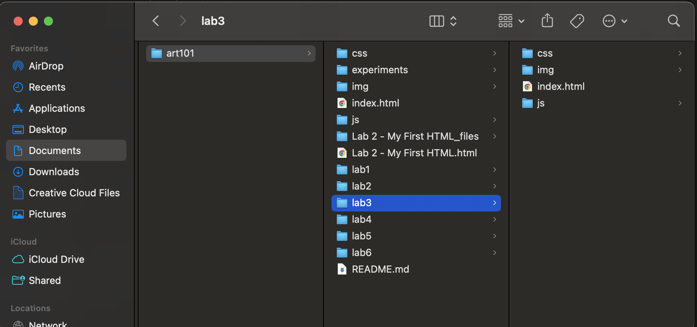

Lab 3 File Structures
The subject of the lab was to create an organized file structure on my laptop and adding index.html files.
Challenge
We struggled to link the lab html's in the main html that we made in task 2. We also had to figure out how to adjust the image size since the css prompt was not correct for us. Another challenge we had is remembering what code to use in order to complete the task.
Problems
The problems that arose for us was linking the htmls all on the first page. However we put our brains together and used google to find different ways of solving this problem and we also experimented with different codes in order to come up with a solution. I figured out that I placed my html in the wrong folder and moved it to the correct area which fixed the issue.
Reflection
Since we do not as much coding experience as others we felt accomplished completing this assignment together. We struggled a good amount but we are glad that we were able explore different solutions to our problems and gained learning experience from our mistakes.
Results
Here is my screenshot regarding my lab 3 file structure.
This is my screenshot of my browser html and source code in VS Code.
 Lab 2 File Structures
Lab 3 File Structures
Lab 4 File Structures
Lab 5 File Structures
Lab 6 File Structures
Lab 7 File Structures
Lab 8 File Structures
Lab 9 File Structures
Lab 2 File Structures
Lab 3 File Structures
Lab 4 File Structures
Lab 5 File Structures
Lab 6 File Structures
Lab 7 File Structures
Lab 8 File Structures
Lab 9 File Structures